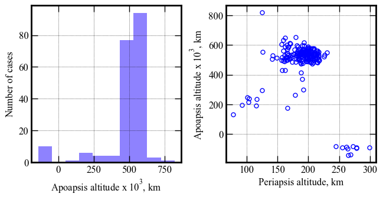
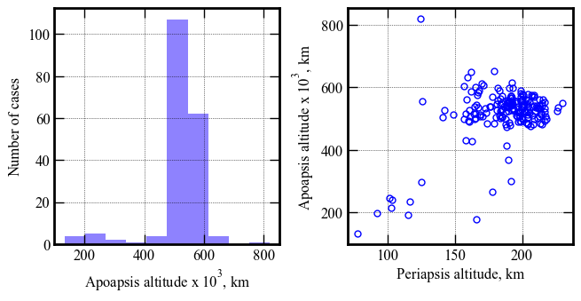
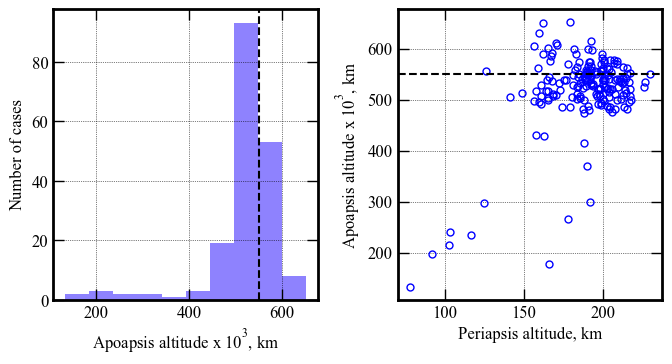
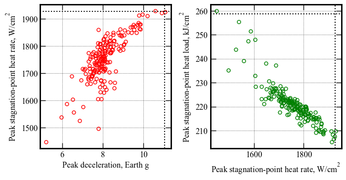
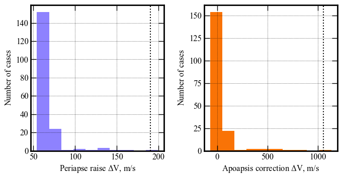

Section 08 - Performance Analysis - C - 5X Higher atm uncertainty¶
[26]:
from AMAT.planet import Planet
from AMAT.vehicle import Vehicle
[27]:
import numpy as np
import matplotlib.pyplot as plt
[28]:
planet = Planet('URANUS')
planet.loadAtmosphereModel('../../../atmdata/Uranus/uranus-gram-avg.dat', 0 , 1 ,2, 3, heightInKmFlag=True)
planet.h_skip = 1000.0E3
planet.h_low = 120e3
planet.h_trap = 100e3
[23]:
vehicle=Vehicle('Titania', 3200.0, 146 , 0.24, np.pi*4.5**2.0, 0.0, 1.125, planet)
vehicle.setInitialState(1000.0,-15.22,75.55,29.2877,88.687,-11.7 ,0.0,0.0)
vehicle.setSolverParams(1E-6)
# Set the guidance parameters described in the paper.
# See the function description for parameter details.
# Set max roll rate constraint to 30 deg/s
vehicle.setMaxRollRate(30.0)
# Set Ghdot = 83
# Set Gq = 9.0
# Set v_switch_kms = 16.0 :: this parameter is not really used, and should just be set to low value
# Set low_Alt_km = 120
# Set numPoints_lowAlt = 101
# Set hdot_threshold = -500 m/s
vehicle.setEquilibriumGlideParams(83.0, 9.0, 16.0, 120.0, 101, -500.0)
# Set target orbit parameters
# periapsis = 4000.0 km
# apoapsis = 550,000 km :: set slightly above target (500e3) to account for bias in targeting algorithm
# apoapsis tolerance = 10 km
vehicle.setTargetOrbitParams(4000.0, 550.0E3, 10.0E3)
[24]:
# Set path to atmfiles with randomly perturbed atmosphere files.
atmfiles = ['../../../atmdata/Uranus/perturbed/G-01.txt',
'../../../atmdata/Uranus/perturbed/G-02.txt',
'../../../atmdata/Uranus/perturbed/G-03.txt',
'../../../atmdata/Uranus/perturbed/G-04.txt',
'../../../atmdata/Uranus/perturbed/G-05.txt']
[25]:
vehicle.setupMonteCarloSimulation(1201, 200, atmfiles, 0, 1, 2, 3, 4, True, \
-11.70, 0.10, 0.24, 0.013, 0.5, 0.1, 2400.0, atmSigmaFactor=5)
Small run N = 200¶
[26]:
vehicle.runMonteCarlo2(200, '../../../data/acta-astronautica/uranus-orbiter-probe/MCBXC')
RUN #: 1, SAMPLE #: 118, EFPA: -11.80, SIGMA: -5.87, LD: 0.24, APO : 512669.26
RUN #: 2, SAMPLE #: 111, EFPA: -11.73, SIGMA: -1.98, LD: 0.25, APO : 588945.01
RUN #: 3, SAMPLE #: 183, EFPA: -11.73, SIGMA: -1.26, LD: 0.23, APO : 501440.30
RUN #: 4, SAMPLE #: 76, EFPA: -11.78, SIGMA: 3.25, LD: 0.24, APO : 521530.74
RUN #: 5, SAMPLE #: 138, EFPA: -11.70, SIGMA: 3.18, LD: 0.23, APO : 520211.82
RUN #: 6, SAMPLE #: 87, EFPA: -11.56, SIGMA: -9.16, LD: 0.26, APO : -88785.58
RUN #: 7, SAMPLE #: 39, EFPA: -11.85, SIGMA: 1.41, LD: 0.24, APO : 552827.67
RUN #: 8, SAMPLE #: 137, EFPA: -11.66, SIGMA: -2.42, LD: 0.24, APO : 481494.13
RUN #: 9, SAMPLE #: 81, EFPA: -11.63, SIGMA: -6.71, LD: 0.24, APO : 819201.54
RUN #: 10, SAMPLE #: 15, EFPA: -11.70, SIGMA: 7.16, LD: 0.25, APO : 508270.80
RUN #: 11, SAMPLE #: 38, EFPA: -11.60, SIGMA: 4.72, LD: 0.22, APO : 541784.75
RUN #: 12, SAMPLE #: 135, EFPA: -11.84, SIGMA: -0.97, LD: 0.26, APO : 503673.95
RUN #: 13, SAMPLE #: 58, EFPA: -11.97, SIGMA: -2.16, LD: 0.23, APO : 538584.87
RUN #: 14, SAMPLE #: 198, EFPA: -11.59, SIGMA: -4.50, LD: 0.24, APO : 502995.31
RUN #: 15, SAMPLE #: 170, EFPA: -11.56, SIGMA: -0.49, LD: 0.26, APO : 525879.03
RUN #: 16, SAMPLE #: 145, EFPA: -11.61, SIGMA: -1.84, LD: 0.24, APO : 569428.77
RUN #: 17, SAMPLE #: 104, EFPA: -11.68, SIGMA: 8.01, LD: 0.22, APO : 533518.43
RUN #: 18, SAMPLE #: 150, EFPA: -11.87, SIGMA: 1.95, LD: 0.23, APO : 550836.61
RUN #: 19, SAMPLE #: 195, EFPA: -11.49, SIGMA: -0.60, LD: 0.24, APO : 532476.54
RUN #: 20, SAMPLE #: 15, EFPA: -11.80, SIGMA: -0.62, LD: 0.23, APO : 599067.98
RUN #: 21, SAMPLE #: 187, EFPA: -11.68, SIGMA: 6.65, LD: 0.22, APO : 560970.88
RUN #: 22, SAMPLE #: 55, EFPA: -11.83, SIGMA: -10.02, LD: 0.25, APO : -84563.25
RUN #: 23, SAMPLE #: 5, EFPA: -11.71, SIGMA: -0.44, LD: 0.24, APO : 538418.94
RUN #: 24, SAMPLE #: 36, EFPA: -11.75, SIGMA: 0.93, LD: 0.25, APO : 473901.46
RUN #: 25, SAMPLE #: 177, EFPA: -11.63, SIGMA: 1.73, LD: 0.26, APO : 528111.06
RUN #: 26, SAMPLE #: 192, EFPA: -11.79, SIGMA: 4.68, LD: 0.22, APO : 581122.88
RUN #: 27, SAMPLE #: 44, EFPA: -11.67, SIGMA: -8.26, LD: 0.27, APO : 247195.52
RUN #: 28, SAMPLE #: 186, EFPA: -11.73, SIGMA: 7.45, LD: 0.25, APO : 576462.22
RUN #: 29, SAMPLE #: 50, EFPA: -11.59, SIGMA: 3.61, LD: 0.23, APO : 510537.02
RUN #: 30, SAMPLE #: 157, EFPA: -11.72, SIGMA: -3.09, LD: 0.23, APO : 564498.48
RUN #: 31, SAMPLE #: 92, EFPA: -11.62, SIGMA: -2.85, LD: 0.24, APO : 518155.67
RUN #: 32, SAMPLE #: 117, EFPA: -11.71, SIGMA: 3.01, LD: 0.22, APO : 521038.35
RUN #: 33, SAMPLE #: 130, EFPA: -11.65, SIGMA: 2.92, LD: 0.22, APO : 538548.65
RUN #: 34, SAMPLE #: 82, EFPA: -11.81, SIGMA: -0.72, LD: 0.23, APO : 506423.94
RUN #: 35, SAMPLE #: 143, EFPA: -11.83, SIGMA: 1.40, LD: 0.23, APO : 574022.84
RUN #: 36, SAMPLE #: 164, EFPA: -11.53, SIGMA: -0.32, LD: 0.25, APO : 549660.13
RUN #: 37, SAMPLE #: 30, EFPA: -11.72, SIGMA: 3.47, LD: 0.23, APO : 505493.50
RUN #: 38, SAMPLE #: 89, EFPA: -11.67, SIGMA: 2.86, LD: 0.27, APO : 572153.08
RUN #: 39, SAMPLE #: 92, EFPA: -11.77, SIGMA: 4.22, LD: 0.24, APO : 539473.15
RUN #: 40, SAMPLE #: 11, EFPA: -11.69, SIGMA: -1.19, LD: 0.25, APO : 535667.15
RUN #: 41, SAMPLE #: 68, EFPA: -11.75, SIGMA: 1.63, LD: 0.23, APO : 539365.58
RUN #: 42, SAMPLE #: 150, EFPA: -11.68, SIGMA: 4.38, LD: 0.24, APO : 537301.58
RUN #: 43, SAMPLE #: 78, EFPA: -11.77, SIGMA: 1.56, LD: 0.24, APO : 530071.11
RUN #: 44, SAMPLE #: 199, EFPA: -11.58, SIGMA: 0.59, LD: 0.23, APO : 558097.33
RUN #: 45, SAMPLE #: 32, EFPA: -11.87, SIGMA: 6.14, LD: 0.24, APO : 265011.19
RUN #: 46, SAMPLE #: 131, EFPA: -11.76, SIGMA: 1.94, LD: 0.24, APO : 521913.58
RUN #: 47, SAMPLE #: 58, EFPA: -11.91, SIGMA: 0.55, LD: 0.24, APO : 511759.65
RUN #: 48, SAMPLE #: 26, EFPA: -11.66, SIGMA: 5.72, LD: 0.25, APO : 480749.35
RUN #: 49, SAMPLE #: 68, EFPA: -11.52, SIGMA: 8.08, LD: 0.25, APO : 549440.47
RUN #: 50, SAMPLE #: 56, EFPA: -11.65, SIGMA: 1.48, LD: 0.24, APO : 529851.12
RUN #: 51, SAMPLE #: 190, EFPA: -11.73, SIGMA: 2.19, LD: 0.24, APO : 547968.27
RUN #: 52, SAMPLE #: 111, EFPA: -11.74, SIGMA: 1.88, LD: 0.24, APO : 542023.62
RUN #: 53, SAMPLE #: 57, EFPA: -11.67, SIGMA: 8.13, LD: 0.25, APO : 521635.99
RUN #: 54, SAMPLE #: 77, EFPA: -11.70, SIGMA: -5.91, LD: 0.21, APO : 240967.54
RUN #: 55, SAMPLE #: 152, EFPA: -11.65, SIGMA: -6.36, LD: 0.24, APO : 651309.63
RUN #: 56, SAMPLE #: 140, EFPA: -11.79, SIGMA: 0.35, LD: 0.26, APO : 566617.27
RUN #: 57, SAMPLE #: 94, EFPA: -11.69, SIGMA: 3.59, LD: 0.25, APO : 568802.27
RUN #: 58, SAMPLE #: 188, EFPA: -11.61, SIGMA: -1.92, LD: 0.24, APO : 516124.95
RUN #: 59, SAMPLE #: 180, EFPA: -11.83, SIGMA: -3.48, LD: 0.24, APO : 507783.57
RUN #: 60, SAMPLE #: 190, EFPA: -11.64, SIGMA: 5.03, LD: 0.22, APO : 541067.46
RUN #: 61, SAMPLE #: 12, EFPA: -11.69, SIGMA: -0.34, LD: 0.25, APO : 573511.28
RUN #: 62, SAMPLE #: 47, EFPA: -11.78, SIGMA: 6.80, LD: 0.25, APO : 539143.84
RUN #: 63, SAMPLE #: 111, EFPA: -11.80, SIGMA: 5.59, LD: 0.25, APO : 555663.60
RUN #: 64, SAMPLE #: 41, EFPA: -11.62, SIGMA: -0.20, LD: 0.24, APO : 615552.46
RUN #: 65, SAMPLE #: 111, EFPA: -11.73, SIGMA: -4.39, LD: 0.25, APO : 498656.55
RUN #: 66, SAMPLE #: 169, EFPA: -11.53, SIGMA: 2.28, LD: 0.26, APO : 487468.15
RUN #: 67, SAMPLE #: 66, EFPA: -11.77, SIGMA: -4.40, LD: 0.25, APO : 631509.69
RUN #: 68, SAMPLE #: 143, EFPA: -11.70, SIGMA: -1.05, LD: 0.22, APO : 528791.99
RUN #: 69, SAMPLE #: 187, EFPA: -11.67, SIGMA: -4.15, LD: 0.25, APO : 538824.31
RUN #: 70, SAMPLE #: 198, EFPA: -11.82, SIGMA: 3.11, LD: 0.24, APO : 520611.27
RUN #: 71, SAMPLE #: 200, EFPA: -11.74, SIGMA: 1.98, LD: 0.24, APO : 537811.76
RUN #: 72, SAMPLE #: 19, EFPA: -11.59, SIGMA: 7.97, LD: 0.25, APO : 523691.55
RUN #: 73, SAMPLE #: 7, EFPA: -11.84, SIGMA: -3.75, LD: 0.24, APO : 528102.51
RUN #: 74, SAMPLE #: 112, EFPA: -11.72, SIGMA: 6.32, LD: 0.25, APO : 482222.97
RUN #: 75, SAMPLE #: 133, EFPA: -11.62, SIGMA: -6.60, LD: 0.26, APO : 505336.02
RUN #: 76, SAMPLE #: 76, EFPA: -11.62, SIGMA: -5.33, LD: 0.25, APO : 649977.02
RUN #: 77, SAMPLE #: 183, EFPA: -11.65, SIGMA: 0.27, LD: 0.26, APO : 547538.08
RUN #: 78, SAMPLE #: 191, EFPA: -11.86, SIGMA: 4.23, LD: 0.24, APO : 598370.67
RUN #: 79, SAMPLE #: 171, EFPA: -11.75, SIGMA: -8.90, LD: 0.24, APO : -88885.55
RUN #: 80, SAMPLE #: 114, EFPA: -11.75, SIGMA: -4.63, LD: 0.25, APO : 555582.99
RUN #: 81, SAMPLE #: 6, EFPA: -11.86, SIGMA: 1.47, LD: 0.24, APO : 488312.76
RUN #: 82, SAMPLE #: 143, EFPA: -11.69, SIGMA: 6.90, LD: 0.25, APO : 519572.19
RUN #: 83, SAMPLE #: 103, EFPA: -11.70, SIGMA: -7.79, LD: 0.24, APO : -86596.33
RUN #: 84, SAMPLE #: 125, EFPA: -11.70, SIGMA: 5.23, LD: 0.23, APO : 481371.23
RUN #: 85, SAMPLE #: 168, EFPA: -11.63, SIGMA: -5.19, LD: 0.24, APO : 591282.88
RUN #: 86, SAMPLE #: 176, EFPA: -11.80, SIGMA: -3.29, LD: 0.24, APO : 537423.02
RUN #: 87, SAMPLE #: 128, EFPA: -11.65, SIGMA: 1.57, LD: 0.24, APO : 559307.88
RUN #: 88, SAMPLE #: 60, EFPA: -11.76, SIGMA: 1.72, LD: 0.24, APO : 565865.26
RUN #: 89, SAMPLE #: 111, EFPA: -11.57, SIGMA: 1.49, LD: 0.23, APO : 547601.81
RUN #: 90, SAMPLE #: 157, EFPA: -11.79, SIGMA: -1.06, LD: 0.24, APO : 556475.82
RUN #: 91, SAMPLE #: 84, EFPA: -11.55, SIGMA: -0.35, LD: 0.25, APO : 554223.60
RUN #: 92, SAMPLE #: 133, EFPA: -11.70, SIGMA: 9.22, LD: 0.22, APO : 531944.66
RUN #: 93, SAMPLE #: 7, EFPA: -11.87, SIGMA: 3.92, LD: 0.21, APO : 556516.64
RUN #: 94, SAMPLE #: 146, EFPA: -11.65, SIGMA: -5.16, LD: 0.25, APO : 430710.05
RUN #: 95, SAMPLE #: 64, EFPA: -11.77, SIGMA: -1.68, LD: 0.25, APO : 501587.70
RUN #: 96, SAMPLE #: 41, EFPA: -11.77, SIGMA: -4.66, LD: 0.23, APO : 494655.47
RUN #: 97, SAMPLE #: 131, EFPA: -11.59, SIGMA: -4.10, LD: 0.25, APO : 517152.82
RUN #: 98, SAMPLE #: 134, EFPA: -11.74, SIGMA: -3.04, LD: 0.24, APO : 505997.67
RUN #: 99, SAMPLE #: 144, EFPA: -11.56, SIGMA: 0.80, LD: 0.24, APO : 541213.28
RUN #: 100, SAMPLE #: 44, EFPA: -11.48, SIGMA: -1.17, LD: 0.24, APO : 572988.56
RUN #: 101, SAMPLE #: 52, EFPA: -11.70, SIGMA: -1.77, LD: 0.22, APO : 549334.20
RUN #: 102, SAMPLE #: 169, EFPA: -11.65, SIGMA: 6.43, LD: 0.26, APO : 534507.23
RUN #: 103, SAMPLE #: 198, EFPA: -11.62, SIGMA: 4.17, LD: 0.26, APO : 494701.58
RUN #: 104, SAMPLE #: 92, EFPA: -11.68, SIGMA: -1.38, LD: 0.25, APO : 547214.22
RUN #: 105, SAMPLE #: 138, EFPA: -11.87, SIGMA: -0.30, LD: 0.24, APO : 543617.41
RUN #: 106, SAMPLE #: 87, EFPA: -11.69, SIGMA: 6.55, LD: 0.24, APO : 485258.99
RUN #: 107, SAMPLE #: 31, EFPA: -11.55, SIGMA: 1.93, LD: 0.23, APO : 536475.64
RUN #: 108, SAMPLE #: 72, EFPA: -11.59, SIGMA: 3.83, LD: 0.24, APO : 524863.22
RUN #: 109, SAMPLE #: 22, EFPA: -11.65, SIGMA: 1.09, LD: 0.23, APO : 577836.31
RUN #: 110, SAMPLE #: 150, EFPA: -11.65, SIGMA: 1.64, LD: 0.24, APO : 489459.00
RUN #: 111, SAMPLE #: 143, EFPA: -11.56, SIGMA: -1.32, LD: 0.25, APO : 546738.08
RUN #: 112, SAMPLE #: 195, EFPA: -11.75, SIGMA: -7.31, LD: 0.24, APO : 192002.04
RUN #: 113, SAMPLE #: 119, EFPA: -11.81, SIGMA: -3.09, LD: 0.25, APO : 585485.66
RUN #: 114, SAMPLE #: 12, EFPA: -11.63, SIGMA: -4.73, LD: 0.25, APO : 558236.36
RUN #: 115, SAMPLE #: 21, EFPA: -11.79, SIGMA: -4.12, LD: 0.26, APO : 486277.20
RUN #: 116, SAMPLE #: 169, EFPA: -11.67, SIGMA: -7.78, LD: 0.23, APO : -141833.99
RUN #: 117, SAMPLE #: 145, EFPA: -11.71, SIGMA: 1.69, LD: 0.25, APO : 519864.73
RUN #: 118, SAMPLE #: 8, EFPA: -11.61, SIGMA: -9.88, LD: 0.25, APO : -82324.47
RUN #: 119, SAMPLE #: 175, EFPA: -11.70, SIGMA: -4.72, LD: 0.23, APO : 611630.98
RUN #: 120, SAMPLE #: 123, EFPA: -11.72, SIGMA: -2.43, LD: 0.24, APO : 508768.73
RUN #: 121, SAMPLE #: 75, EFPA: -11.94, SIGMA: -4.71, LD: 0.24, APO : 516113.25
RUN #: 122, SAMPLE #: 76, EFPA: -11.60, SIGMA: 7.32, LD: 0.25, APO : 535045.25
RUN #: 123, SAMPLE #: 107, EFPA: -11.66, SIGMA: 3.54, LD: 0.22, APO : 538495.12
RUN #: 124, SAMPLE #: 35, EFPA: -11.54, SIGMA: 5.43, LD: 0.23, APO : 549291.96
RUN #: 125, SAMPLE #: 149, EFPA: -11.71, SIGMA: -0.56, LD: 0.24, APO : 557833.70
RUN #: 126, SAMPLE #: 185, EFPA: -11.47, SIGMA: 0.82, LD: 0.23, APO : 507147.26
RUN #: 127, SAMPLE #: 117, EFPA: -11.59, SIGMA: 1.53, LD: 0.23, APO : 513997.76
RUN #: 128, SAMPLE #: 146, EFPA: -11.63, SIGMA: -5.98, LD: 0.24, APO : 561311.72
RUN #: 129, SAMPLE #: 112, EFPA: -11.75, SIGMA: -1.43, LD: 0.24, APO : 526711.47
RUN #: 130, SAMPLE #: 2, EFPA: -11.39, SIGMA: -9.71, LD: 0.23, APO : -89402.64
RUN #: 131, SAMPLE #: 196, EFPA: -11.64, SIGMA: -5.03, LD: 0.25, APO : 535531.32
RUN #: 132, SAMPLE #: 155, EFPA: -11.68, SIGMA: 1.12, LD: 0.24, APO : 492986.08
RUN #: 133, SAMPLE #: 89, EFPA: -11.87, SIGMA: 0.98, LD: 0.24, APO : 542124.16
RUN #: 134, SAMPLE #: 144, EFPA: -11.74, SIGMA: -5.36, LD: 0.25, APO : 533255.25
RUN #: 135, SAMPLE #: 126, EFPA: -11.68, SIGMA: 7.16, LD: 0.24, APO : 511966.02
RUN #: 136, SAMPLE #: 39, EFPA: -11.66, SIGMA: -4.76, LD: 0.23, APO : 511911.15
RUN #: 137, SAMPLE #: 120, EFPA: -11.73, SIGMA: 5.05, LD: 0.24, APO : 499952.59
RUN #: 138, SAMPLE #: 21, EFPA: -11.73, SIGMA: -2.34, LD: 0.24, APO : 558382.27
RUN #: 139, SAMPLE #: 188, EFPA: -11.66, SIGMA: 1.25, LD: 0.25, APO : 574366.98
RUN #: 140, SAMPLE #: 72, EFPA: -11.79, SIGMA: 0.11, LD: 0.23, APO : 511715.34
RUN #: 141, SAMPLE #: 118, EFPA: -11.55, SIGMA: -10.06, LD: 0.24, APO : -92704.24
RUN #: 142, SAMPLE #: 136, EFPA: -11.69, SIGMA: 2.78, LD: 0.24, APO : 476140.14
RUN #: 143, SAMPLE #: 118, EFPA: -11.71, SIGMA: -3.30, LD: 0.24, APO : 539886.06
RUN #: 144, SAMPLE #: 145, EFPA: -11.66, SIGMA: 5.50, LD: 0.25, APO : 553005.24
RUN #: 145, SAMPLE #: 42, EFPA: -11.58, SIGMA: 1.69, LD: 0.24, APO : 521059.77
RUN #: 146, SAMPLE #: 15, EFPA: -11.74, SIGMA: 0.70, LD: 0.25, APO : 561614.03
RUN #: 147, SAMPLE #: 72, EFPA: -11.85, SIGMA: 6.00, LD: 0.25, APO : 414355.22
RUN #: 148, SAMPLE #: 59, EFPA: -11.64, SIGMA: 4.79, LD: 0.23, APO : 485745.23
RUN #: 149, SAMPLE #: 156, EFPA: -11.56, SIGMA: 2.82, LD: 0.26, APO : 501316.40
RUN #: 150, SAMPLE #: 101, EFPA: -11.90, SIGMA: 7.82, LD: 0.24, APO : 176814.44
RUN #: 151, SAMPLE #: 36, EFPA: -11.60, SIGMA: -5.46, LD: 0.23, APO : 605366.84
RUN #: 152, SAMPLE #: 54, EFPA: -11.66, SIGMA: -7.90, LD: 0.21, APO : -138610.64
RUN #: 153, SAMPLE #: 101, EFPA: -11.59, SIGMA: 1.90, LD: 0.23, APO : 522657.83
RUN #: 154, SAMPLE #: 157, EFPA: -11.76, SIGMA: -4.54, LD: 0.26, APO : 588411.22
RUN #: 155, SAMPLE #: 18, EFPA: -11.68, SIGMA: 4.29, LD: 0.23, APO : 553282.23
RUN #: 156, SAMPLE #: 121, EFPA: -11.68, SIGMA: -9.33, LD: 0.25, APO : -97687.91
RUN #: 157, SAMPLE #: 160, EFPA: -11.70, SIGMA: -6.52, LD: 0.24, APO : 297095.20
RUN #: 158, SAMPLE #: 187, EFPA: -11.68, SIGMA: 4.98, LD: 0.25, APO : 562940.94
RUN #: 159, SAMPLE #: 109, EFPA: -11.75, SIGMA: -1.23, LD: 0.24, APO : 524010.92
RUN #: 160, SAMPLE #: 17, EFPA: -11.52, SIGMA: -3.15, LD: 0.22, APO : 485405.89
RUN #: 161, SAMPLE #: 112, EFPA: -11.73, SIGMA: -2.19, LD: 0.24, APO : 506507.78
RUN #: 162, SAMPLE #: 183, EFPA: -11.67, SIGMA: 1.17, LD: 0.26, APO : 548623.40
RUN #: 163, SAMPLE #: 185, EFPA: -11.75, SIGMA: 0.99, LD: 0.25, APO : 541320.13
RUN #: 164, SAMPLE #: 22, EFPA: -11.48, SIGMA: -6.66, LD: 0.23, APO : 428643.64
RUN #: 165, SAMPLE #: 58, EFPA: -11.67, SIGMA: 0.61, LD: 0.22, APO : 561632.48
RUN #: 166, SAMPLE #: 1, EFPA: -12.03, SIGMA: 0.12, LD: 0.22, APO : 575161.56
RUN #: 167, SAMPLE #: 99, EFPA: -11.66, SIGMA: 0.88, LD: 0.26, APO : 498177.73
RUN #: 168, SAMPLE #: 157, EFPA: -11.73, SIGMA: -4.81, LD: 0.25, APO : 498054.87
RUN #: 169, SAMPLE #: 21, EFPA: -11.81, SIGMA: -5.88, LD: 0.25, APO : 234963.01
RUN #: 170, SAMPLE #: 19, EFPA: -11.69, SIGMA: -4.30, LD: 0.25, APO : 545206.91
RUN #: 171, SAMPLE #: 198, EFPA: -11.80, SIGMA: -2.69, LD: 0.22, APO : 491285.55
RUN #: 172, SAMPLE #: 102, EFPA: -11.51, SIGMA: 4.07, LD: 0.24, APO : 498367.70
RUN #: 173, SAMPLE #: 33, EFPA: -11.71, SIGMA: -1.67, LD: 0.23, APO : 526110.73
RUN #: 174, SAMPLE #: 77, EFPA: -11.70, SIGMA: 1.72, LD: 0.23, APO : 554495.48
RUN #: 175, SAMPLE #: 78, EFPA: -11.73, SIGMA: -6.84, LD: 0.24, APO : 197753.88
RUN #: 176, SAMPLE #: 69, EFPA: -11.73, SIGMA: -1.11, LD: 0.23, APO : 550598.48
RUN #: 177, SAMPLE #: 103, EFPA: -11.79, SIGMA: 11.26, LD: 0.22, APO : 299345.54
RUN #: 178, SAMPLE #: 167, EFPA: -11.64, SIGMA: 0.18, LD: 0.24, APO : 577487.63
RUN #: 179, SAMPLE #: 35, EFPA: -11.76, SIGMA: -4.63, LD: 0.23, APO : 601392.00
RUN #: 180, SAMPLE #: 112, EFPA: -11.85, SIGMA: 2.98, LD: 0.23, APO : 597931.97
RUN #: 181, SAMPLE #: 200, EFPA: -11.76, SIGMA: -1.15, LD: 0.23, APO : 499936.26
RUN #: 182, SAMPLE #: 124, EFPA: -11.68, SIGMA: 3.22, LD: 0.22, APO : 542362.49
RUN #: 183, SAMPLE #: 193, EFPA: -11.69, SIGMA: 0.49, LD: 0.26, APO : 490835.90
RUN #: 184, SAMPLE #: 101, EFPA: -11.80, SIGMA: 6.59, LD: 0.22, APO : 589205.98
RUN #: 185, SAMPLE #: 76, EFPA: -11.63, SIGMA: 0.54, LD: 0.24, APO : 576696.01
RUN #: 186, SAMPLE #: 66, EFPA: -11.65, SIGMA: -5.23, LD: 0.22, APO : 214938.10
RUN #: 187, SAMPLE #: 167, EFPA: -11.82, SIGMA: 2.20, LD: 0.25, APO : 511797.55
RUN #: 188, SAMPLE #: 23, EFPA: -11.66, SIGMA: 2.46, LD: 0.25, APO : 524782.74
RUN #: 189, SAMPLE #: 75, EFPA: -11.87, SIGMA: -1.95, LD: 0.23, APO : 607640.97
RUN #: 190, SAMPLE #: 128, EFPA: -11.67, SIGMA: -4.92, LD: 0.25, APO : 527933.25
RUN #: 191, SAMPLE #: 32, EFPA: -11.72, SIGMA: -0.70, LD: 0.24, APO : 542490.54
RUN #: 192, SAMPLE #: 109, EFPA: -11.75, SIGMA: 0.55, LD: 0.25, APO : 479762.11
RUN #: 193, SAMPLE #: 104, EFPA: -11.68, SIGMA: -0.52, LD: 0.23, APO : 507765.14
RUN #: 194, SAMPLE #: 42, EFPA: -11.85, SIGMA: -5.57, LD: 0.26, APO : 133058.94
RUN #: 195, SAMPLE #: 195, EFPA: -11.84, SIGMA: 5.80, LD: 0.23, APO : 369398.45
RUN #: 196, SAMPLE #: 119, EFPA: -11.78, SIGMA: -0.06, LD: 0.22, APO : 522657.84
RUN #: 197, SAMPLE #: 178, EFPA: -11.77, SIGMA: 2.40, LD: 0.22, APO : 569783.23
RUN #: 198, SAMPLE #: 186, EFPA: -11.61, SIGMA: -1.55, LD: 0.25, APO : 531578.77
RUN #: 199, SAMPLE #: 68, EFPA: -11.69, SIGMA: -0.68, LD: 0.25, APO : 558122.47
RUN #: 200, SAMPLE #: 181, EFPA: -11.56, SIGMA: 5.49, LD: 0.24, APO : 507811.76
[29]:
p1 = np.loadtxt('../../../data/acta-astronautica/uranus-orbiter-probe/MCBXC/terminal_periapsis_arr.txt')
x1 = np.loadtxt('../../../data/acta-astronautica/uranus-orbiter-probe/MCBXC/terminal_apoapsis_arr.txt')
y1 = np.loadtxt('../../../data/acta-astronautica/uranus-orbiter-probe/MCBXC/acc_net_g_max_arr.txt')
z1 = np.loadtxt('../../../data/acta-astronautica/uranus-orbiter-probe/MCBXC/q_stag_max_arr.txt')
h1 = np.loadtxt('../../../data/acta-astronautica/uranus-orbiter-probe/MCBXC/heatload_max_arr.txt')
u1 = np.loadtxt('../../../data/acta-astronautica/uranus-orbiter-probe/MCBXC/periapsis_raise_DV_arr.txt')
v1 = np.loadtxt('../../../data/acta-astronautica/uranus-orbiter-probe/MCBXC/apoapsis_raise_DV_arr.txt')
[30]:
fig, axes = plt.subplots(1, 2, figsize = (6.5, 3.25))
plt.rc('font',family='Times New Roman')
params = {'mathtext.default': 'regular' }
plt.rcParams.update(params)
fig.tight_layout()
plt.subplots_adjust(wspace=0.30)
axes[0].hist(x1/1000.0, bins=10, color='xkcd:periwinkle')
axes[0].set_xlabel('Apoapsis altitude x '+r'$10^3$'+', km', fontsize=12)
axes[0].set_ylabel('Number of cases', fontsize=12)
axes[0].tick_params(direction='in')
axes[0].yaxis.set_ticks_position('both')
axes[0].xaxis.set_ticks_position('both')
axes[0].tick_params(axis='x',labelsize=12)
axes[0].tick_params(axis='y',labelsize=12)
axes[1].plot(p1, x1/1000.0, 'bo', markersize=5, mfc='None')
axes[1].set_xlabel('Periapsis altitude, km',fontsize=12)
axes[1].set_ylabel('Apoapsis altitude x '+r'$10^3$'+', km', fontsize=12)
axes[1].tick_params(direction='in')
axes[1].yaxis.set_ticks_position('both')
axes[1].xaxis.set_ticks_position('both')
axes[1].tick_params(axis='x',labelsize=12)
axes[1].tick_params(axis='y',labelsize=12)
for ax in axes:
ax.xaxis.set_tick_params(direction='in', which='both')
ax.yaxis.set_tick_params(direction='in', which='both')
ax.xaxis.set_tick_params(width=1, length=8)
ax.yaxis.set_tick_params(width=1, length=8)
ax.xaxis.set_tick_params(width=1, length=6, which='minor')
ax.yaxis.set_tick_params(width=1, length=6, which='minor')
ax.xaxis.grid(which='major', color='k', linestyle='dotted', linewidth=0.5)
ax.xaxis.grid(which='minor', color='k', linestyle='dotted', linewidth=0.0)
ax.yaxis.grid(which='major', color='k', linestyle='dotted', linewidth=0.5)
ax.yaxis.grid(which='minor', color='k', linestyle='dotted', linewidth=0.0)
for axis in ['top', 'bottom', 'left', 'right']:
ax.spines[axis].set_linewidth(2)
plt.show()

Remove cases which did not capture¶
[31]:
del_index1 = np.where(x1 < 0)
del_index1
[31]:
(array([ 5, 21, 78, 82, 115, 117, 129, 140, 151, 155]),)
These ten cases failed to capture. Delete them from the results for plotting.
[32]:
p1 = np.delete(p1, del_index1 )
x1 = np.delete(x1, del_index1 )
y1 = np.delete(y1, del_index1 )
z1 = np.delete(z1, del_index1 )
h1 = np.delete(h1, del_index1 )
u1 = np.delete(u1, del_index1 )
v1 = np.delete(v1, del_index1 )
[33]:
fig, axes = plt.subplots(1, 2, figsize = (6.5, 3.25))
plt.rc('font',family='Times New Roman')
params = {'mathtext.default': 'regular' }
plt.rcParams.update(params)
fig.tight_layout()
plt.subplots_adjust(wspace=0.30)
axes[0].hist(x1/1000.0, bins=10, color='xkcd:periwinkle')
axes[0].set_xlabel('Apoapsis altitude x '+r'$10^3$'+', km', fontsize=12)
axes[0].set_ylabel('Number of cases', fontsize=12)
axes[0].tick_params(direction='in')
axes[0].yaxis.set_ticks_position('both')
axes[0].xaxis.set_ticks_position('both')
axes[0].tick_params(axis='x',labelsize=12)
axes[0].tick_params(axis='y',labelsize=12)
axes[1].plot(p1, x1/1000.0, 'bo', markersize=5, mfc='None')
axes[1].set_xlabel('Periapsis altitude, km',fontsize=12)
axes[1].set_ylabel('Apoapsis altitude x '+r'$10^3$'+', km', fontsize=12)
axes[1].tick_params(direction='in')
axes[1].yaxis.set_ticks_position('both')
axes[1].xaxis.set_ticks_position('both')
axes[1].tick_params(axis='x',labelsize=12)
axes[1].tick_params(axis='y',labelsize=12)
for ax in axes:
ax.xaxis.set_tick_params(direction='in', which='both')
ax.yaxis.set_tick_params(direction='in', which='both')
ax.xaxis.set_tick_params(width=1, length=8)
ax.yaxis.set_tick_params(width=1, length=8)
ax.xaxis.set_tick_params(width=1, length=6, which='minor')
ax.yaxis.set_tick_params(width=1, length=6, which='minor')
ax.xaxis.grid(which='major', color='k', linestyle='dotted', linewidth=0.5)
ax.xaxis.grid(which='minor', color='k', linestyle='dotted', linewidth=0.0)
ax.yaxis.grid(which='major', color='k', linestyle='dotted', linewidth=0.5)
ax.yaxis.grid(which='minor', color='k', linestyle='dotted', linewidth=0.0)
for axis in ['top', 'bottom', 'left', 'right']:
ax.spines[axis].set_linewidth(2)
plt.show()

Also remove one case which had a NaN for peak heat rate for some reason.
[34]:
del_index1 = np.where(np.isnan(z1))
[35]:
p1 = np.delete(p1, del_index1 )
x1 = np.delete(x1, del_index1 )
y1 = np.delete(y1, del_index1 )
z1 = np.delete(z1, del_index1 )
h1 = np.delete(h1, del_index1 )
u1 = np.delete(u1, del_index1 )
v1 = np.delete(v1, del_index1 )
[36]:
del_index1 = np.where(h1<10)
del_index1
[36]:
(array([ 7, 106, 178]),)
[37]:
p1 = np.delete(p1, del_index1 )
x1 = np.delete(x1, del_index1 )
y1 = np.delete(y1, del_index1 )
z1 = np.delete(z1, del_index1 )
h1 = np.delete(h1, del_index1 )
u1 = np.delete(u1, del_index1 )
v1 = np.delete(v1, del_index1 )
[38]:
print("--------------------------------------------------------------------------------------------------------")
print("Parameter | Min. 0.13-percentile Mean 99.87-percentile Max")
print("--------------------------------------------------------------------------------------------------------")
print("Apoapsis altitude, km | " + str(round(np.min(x1))) + " " + str(round(np.percentile(x1, 0.13))) +\
" " + str(round(np.average(x1))) +
" " + str(round(np.percentile(x1, 99.87)))+\
" " + str(round(np.max(x1))))
print("Periapsis altitude, km | " + str(round(np.min(p1))) + " " + str(round(np.percentile(p1, 0.13))) +\
" " + str(round(np.average(p1))) +
" " + str(round(np.percentile(p1, 99.87)))+\
" " + str(round(np.max(p1))))
print("Peak deceleration, g | " + str(round(np.min(y1), 2)) + " " + str(round(np.percentile(y1, 0.13), 2)) +\
" " + str(round(np.average(y1), 2)) +
" " + str(round(np.percentile(y1, 99.87), 2))+\
" " + str(round(np.max(y1), 2)))
print("Peak heat rate, W/cm2 | " + str(round(np.min(z1))) + " " + str(round(np.percentile(z1, 0.13))) +\
" " + str(round(np.average(z1))) +
" " + str(round(np.percentile(z1, 99.87)))+\
" " + str(round(np.max(z1))))
print("Peak heat load, kJ/cm2 | " + str(round(np.min(h1))) + " " + str(round(np.percentile(h1, 0.13))) +\
" " + str(round(np.average(h1))) +
" " + str(round(np.percentile(h1, 99.87)))+\
" " + str(round(np.max(h1))))
print("Periapsis raise dV, m/s| " + str(round(np.min(u1), 2)) + " " + str(round(np.percentile(u1, 0.13), 2)) +\
" " + str(round(np.average(u1), 2)) +
" " + str(round(np.percentile(u1, 99.87), 2))+\
" " + str(round(np.max(u1), 2)))
print("Apoapsis corr. dV, m/s | " + str(round(np.min(v1), 2)) + " " + str(round(np.percentile(v1, 0.13), 2)) +\
" " + str(round(np.average(v1), 2)) +
" " + str(round(np.percentile(v1, 99.87), 2))+\
" " + str(round(np.max(v1), 2)))
print("--------------------------------------------------------------------------------------------------------")
--------------------------------------------------------------------------------------------------------
Parameter | Min. 0.13-percentile Mean 99.87-percentile Max
--------------------------------------------------------------------------------------------------------
Apoapsis altitude, km | 133059 143582 519580 650989 651310
Periapsis altitude, km | 78 81 188 229 230
Peak deceleration, g | 5.22 5.4 8.13 11.04 11.08
Peak heat rate, W/cm2 | 1448 1459 1756 1928 1928
Peak heat load, kJ/cm2 | 205 206 221 259 260
Periapsis raise dV, m/s| 54.45 54.53 68.63 189.93 199.34
Apoapsis corr. dV, m/s | -70.98 -70.79 44.37 1055.64 1131.82
--------------------------------------------------------------------------------------------------------
[40]:
fig, axes = plt.subplots(1, 2, figsize = (6.75, 3.5))
plt.rc('font',family='Times New Roman')
params = {'mathtext.default': 'regular' }
plt.rcParams.update(params)
fig.tight_layout()
plt.subplots_adjust(wspace=0.30)
axes[0].axvline(x=550.0, linewidth=1.5, color='k', linestyle='dashed')
axes[0].hist(x1/1000.0, bins=10, color='xkcd:periwinkle')
axes[0].set_xlabel('Apoapsis altitude x '+r'$10^3$'+', km', fontsize=12)
axes[0].set_ylabel('Number of cases', fontsize=12)
axes[0].tick_params(direction='in')
axes[0].yaxis.set_ticks_position('both')
axes[0].xaxis.set_ticks_position('both')
axes[0].tick_params(axis='x',labelsize=12)
axes[0].tick_params(axis='y',labelsize=12)
axes[1].plot(p1, x1/1000.0, 'bo', markersize=5, mfc='None')
axes[1].axhline(y=550.0, linewidth=1.5, color='k', linestyle='dashed')
axes[1].set_xlabel('Periapsis altitude, km',fontsize=12)
axes[1].set_ylabel('Apoapsis altitude x '+r'$10^3$'+', km', fontsize=12)
axes[1].tick_params(direction='in')
axes[1].yaxis.set_ticks_position('both')
axes[1].xaxis.set_ticks_position('both')
axes[1].tick_params(axis='x',labelsize=12)
axes[1].tick_params(axis='y',labelsize=12)
for ax in axes:
ax.xaxis.set_tick_params(direction='in', which='both')
ax.yaxis.set_tick_params(direction='in', which='both')
ax.xaxis.set_tick_params(width=1, length=8)
ax.yaxis.set_tick_params(width=1, length=8)
ax.xaxis.set_tick_params(width=1, length=6, which='minor')
ax.yaxis.set_tick_params(width=1, length=6, which='minor')
ax.xaxis.grid(which='major', color='k', linestyle='dotted', linewidth=0.5)
ax.xaxis.grid(which='minor', color='k', linestyle='dotted', linewidth=0.0)
ax.yaxis.grid(which='major', color='k', linestyle='dotted', linewidth=0.5)
ax.yaxis.grid(which='minor', color='k', linestyle='dotted', linewidth=0.0)
for axis in ['top', 'bottom', 'left', 'right']:
ax.spines[axis].set_linewidth(2)
plt.savefig('../../../data/acta-astronautica/uranus-orbiter-probe/periapsis-vs-apoapsis-XC.png', dpi= 300,bbox_inches='tight')
plt.savefig('../../../data/acta-astronautica/uranus-orbiter-probe/periapsis-vs-apoapsis-XC.pdf', dpi=300,bbox_inches='tight')
plt.savefig('../../../data/acta-astronautica/uranus-orbiter-probe/periapsis-vs-apoapsis-XC.eps', dpi=300,bbox_inches='tight')
plt.show()

[41]:
fig, axes = plt.subplots(1, 2, figsize = (6.75, 3.5))
plt.rc('font',family='Times New Roman')
params = {'mathtext.default': 'regular' }
plt.rcParams.update(params)
fig.tight_layout()
plt.subplots_adjust(wspace=0.30)
axes[0].plot(y1, z1, 'ro', markersize=5, mfc='None')
axes[0].axhline(y=np.percentile(z1, 99.87), linewidth=1.5, color='k', linestyle='dotted')
axes[0].axvline(x=np.percentile(y1, 99.87), linewidth=1.5, color='k', linestyle='dotted')
axes[0].set_xlabel('Peak deceleration, Earth g', fontsize=12)
axes[0].set_ylabel('Peak stagnation-point heat rate, '+r'$W/cm^2$', fontsize=12)
axes[0].tick_params(direction='in')
axes[0].yaxis.set_ticks_position('both')
axes[0].xaxis.set_ticks_position('both')
axes[0].tick_params(axis='x',labelsize=12)
axes[0].tick_params(axis='y',labelsize=12)
axes[1].plot(z1, h1, 'go', markersize=5, mfc='None')
axes[1].axhline(y=np.percentile(h1, 99.87), linewidth=1.5, color='k', linestyle='dotted')
axes[1].axvline(x=np.percentile(z1, 99.87), linewidth=1.5, color='k', linestyle='dotted')
axes[1].set_xlabel('Peak stagnation-point heat rate, '+r'$W/cm^2$', fontsize=12)
axes[1].set_ylabel('Peak stagnation-point heat load, '+r'$kJ/cm^2$', fontsize=12)
axes[1].tick_params(direction='in')
axes[1].yaxis.set_ticks_position('both')
axes[1].xaxis.set_ticks_position('both')
axes[1].tick_params(axis='x',labelsize=12)
axes[1].tick_params(axis='y',labelsize=12)
for ax in axes:
ax.xaxis.set_tick_params(direction='in', which='both')
ax.yaxis.set_tick_params(direction='in', which='both')
ax.xaxis.set_tick_params(width=1, length=8)
ax.yaxis.set_tick_params(width=1, length=8)
ax.xaxis.set_tick_params(width=1, length=6, which='minor')
ax.yaxis.set_tick_params(width=1, length=6, which='minor')
ax.xaxis.grid(which='major', color='k', linestyle='dotted', linewidth=0.5)
ax.xaxis.grid(which='minor', color='k', linestyle='dotted', linewidth=0.0)
ax.yaxis.grid(which='major', color='k', linestyle='dotted', linewidth=0.5)
ax.yaxis.grid(which='minor', color='k', linestyle='dotted', linewidth=0.0)
for axis in ['top', 'bottom', 'left', 'right']:
ax.spines[axis].set_linewidth(2)
plt.savefig('../../../data/acta-astronautica/uranus-orbiter-probe/heat-rate-vs-g-load-XC.png', dpi= 300,bbox_inches='tight')
plt.savefig('../../../data/acta-astronautica/uranus-orbiter-probe/heat-rate-vs-g-load-XC.pdf', dpi=300,bbox_inches='tight')
plt.savefig('../../../data/acta-astronautica/uranus-orbiter-probe/heat-rate-vs-g-load-XC.eps', dpi=300,bbox_inches='tight')
plt.show()

[42]:
fig, axes = plt.subplots(1, 2, figsize = (6.75, 3.5))
plt.rc('font',family='Times New Roman')
params = {'mathtext.default': 'regular' }
plt.rcParams.update(params)
fig.tight_layout()
plt.subplots_adjust(wspace=0.30)
axes[0].hist(u1, bins=10, color='xkcd:periwinkle')
axes[0].axvline(x=np.percentile(u1, 99.87), linewidth=1.5, color='k', linestyle='dotted')
axes[0].set_xlabel('Periapse raise '+r'$\Delta V$'+', m/s', fontsize=12)
axes[0].set_ylabel('Number of cases', fontsize=12)
axes[0].tick_params(direction='in')
axes[0].yaxis.set_ticks_position('both')
axes[0].xaxis.set_ticks_position('both')
axes[0].tick_params(axis='x',labelsize=12)
axes[0].tick_params(axis='y',labelsize=12)
axes[1].hist(v1, bins=10, color='xkcd:orange')
axes[1].axvline(x=np.percentile(v1, 99.87), linewidth=1.5, color='k', linestyle='dotted')
axes[1].set_xlabel('Apoapsis correction '+r'$\Delta V$'+', m/s', fontsize=12)
axes[1].set_ylabel('Number of cases', fontsize=12)
axes[1].tick_params(direction='in')
axes[1].yaxis.set_ticks_position('both')
axes[1].xaxis.set_ticks_position('both')
axes[1].tick_params(axis='x',labelsize=12)
axes[1].tick_params(axis='y',labelsize=12)
for ax in axes:
ax.xaxis.set_tick_params(direction='in', which='both')
ax.yaxis.set_tick_params(direction='in', which='both')
ax.xaxis.set_tick_params(width=1, length=8)
ax.yaxis.set_tick_params(width=1, length=8)
ax.xaxis.set_tick_params(width=1, length=6, which='minor')
ax.yaxis.set_tick_params(width=1, length=6, which='minor')
ax.xaxis.grid(which='major', color='k', linestyle='dotted', linewidth=0.5)
ax.xaxis.grid(which='minor', color='k', linestyle='dotted', linewidth=0.0)
ax.yaxis.grid(which='major', color='k', linestyle='dotted', linewidth=0.5)
ax.yaxis.grid(which='minor', color='k', linestyle='dotted', linewidth=0.0)
for axis in ['top', 'bottom', 'left', 'right']:
ax.spines[axis].set_linewidth(2)
plt.savefig('../../../data/acta-astronautica/uranus-orbiter-probe/prm-arm-maneuvers-XC.png', dpi= 300,bbox_inches='tight')
plt.savefig('../../../data/acta-astronautica/uranus-orbiter-probe/prm-arm-maneuvers-XC.pdf', dpi=300,bbox_inches='tight')
plt.savefig('../../../data/acta-astronautica/uranus-orbiter-probe/prm-arm-maneuvers-XC.eps', dpi=300,bbox_inches='tight')
plt.show()

[18]:
def percent_between(a, lower, upper, closed_left=True, closed_right=True):
"""
Finds the percentage of values between a range for a numpy array
Parameters
----------
a: np.ndarray
numpy array to calculate percentage
lower: int, float
lower bound
upper: int, float
upper bound
closed_left:
closed left bound ( > vs >= )
closed_right:
closed right bound ( < vs <= )
"""
l = np.greater if not closed_left else np.greater_equal
r = np.less if not closed_right else np.less_equal
c = l(a, lower) & r(a, upper)
return np.count_nonzero(c) / float(a.size)
[19]:
p1 = np.loadtxt('../../../data/acta-astronautica/uranus-orbiter-probe/MCBXC/terminal_periapsis_arr.txt')
x1 = np.loadtxt('../../../data/acta-astronautica/uranus-orbiter-probe/MCBXC/terminal_apoapsis_arr.txt')
y1 = np.loadtxt('../../../data/acta-astronautica/uranus-orbiter-probe/MCBXC/acc_net_g_max_arr.txt')
z1 = np.loadtxt('../../../data/acta-astronautica/uranus-orbiter-probe/MCBXC/q_stag_max_arr.txt')
h1 = np.loadtxt('../../../data/acta-astronautica/uranus-orbiter-probe/MCBXC/heatload_max_arr.txt')
u1 = np.loadtxt('../../../data/acta-astronautica/uranus-orbiter-probe/MCBXC/periapsis_raise_DV_arr.txt')
v1 = np.loadtxt('../../../data/acta-astronautica/uranus-orbiter-probe/MCBXC/apoapsis_raise_DV_arr.txt')
[20]:
percent_between(x1, -3e9, 0)
[20]:
0.05
[21]:
percent_between(x1, 500e3, 600e3)
[21]:
0.705
[22]:
percent_between(x1, 450e3, 650e3)
[22]:
0.865
[23]:
percent_between(x1, 350e3, 750e3)
[23]:
0.89
[24]:
1 - percent_between(x1, 350e3, 750e3) - percent_between(x1, -1e9, 0)
[24]:
0.059999999999999984
[25]:
0.89 + 0.0599 + 0.05
[25]:
0.9999
[ ]: